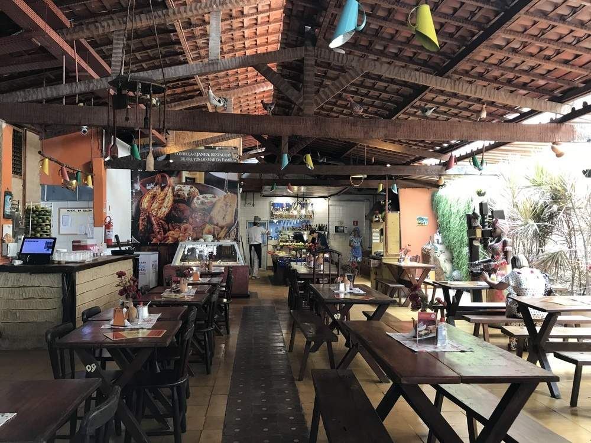
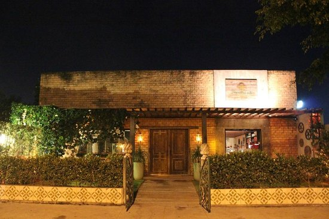
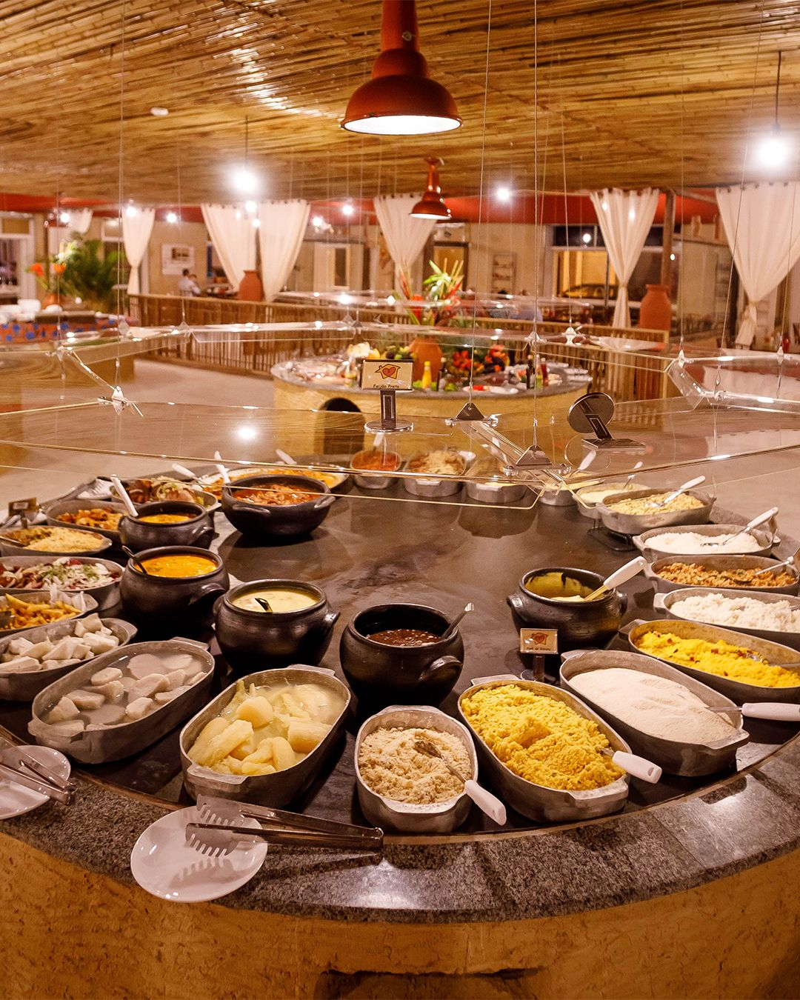
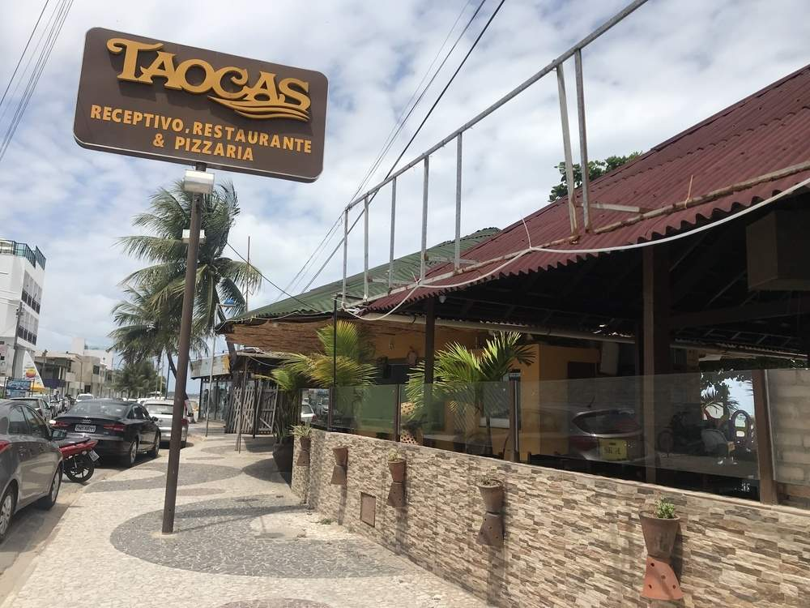
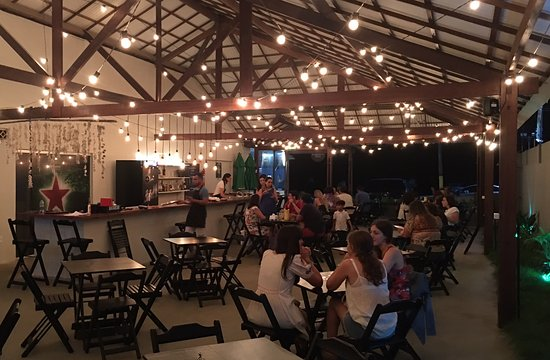
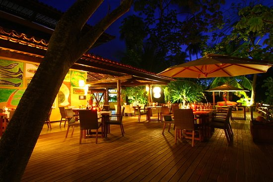

Conheça alguns restaurantes:

Bodega do Sertão
- O restaurante funciona no modelo self-service e expõe sobre um fogão a lenha os autênticos pratos da cozinha do Nordeste brasileiro.
- Endereço: Av. Dr. Júlio Marques Luz, 62 - Jatiúca, Maceió - AL, 57035-420

Sabatelli Pizza & Arte
- A SABATELLI Pizza & Arte é uma casa que traduz em massas, molhos e temperos, a arte da verdadeira pizza à lenha e da deliciosa gastronomia italiana.
- Endereço: R. José Alfredo Marques, 663 - Aldebaran, Maceió - AL

Casa de Mainha
- O restaurante pode ser uma sugestão interessante para quem deseja comer em um ambiente familiar, aconchegante e com uma variedade de alimentos e bebidas.
- Endereço: R. Eng. Demócrito Sarmento Barroca, 80 - Pajuçara, Maceió - AL, 57030-500

Taocas
- Instalado na beira da praia de Maragogi. É um restaurante com cardápio grande, que inclui petiscos, saladas, pratos principais com peixe, carne, camarão e outros frutos do mar.
- Endereço: Av. Sen. Rui Palmeira, 1040 - Centro, Maragogi - AL, 57955-000

Russo Gastrobar
- O Russo Gastrobar é um lugar inusitado em Maragogi. Uma deliciosa cozinha combinando o artesanal com o contemporâneo num espaço despojado.
- Endereço: Av. Sen. Rui Palmeira, 467 - Orla, Maragogi - AL, 57955-000

Camurim Grande
- A nossa culinária é comandada pelo Chef Rogério Costa. Seu estilo contemporâneo permite usar produtos de sua terra, reunindo técnicas de várias tradições culinárias.
- Endereço: Rodovia AL 101 Norte km 124 Sítio Camurim Grande, Maragogi - AL, 57955-000